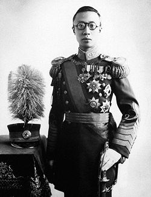

Khi Phổ Nghi lên ngôi thiên tử thì nhà Mãn Thanh đã cai trị Trung Hoa được 244 năm rồi. Sự suy yếu của nhà Minh, sự phản bội của Ngô Tam Quế và tài năng của một thủ lãnh người Mãn Châu đã đưa người Mãn Châu làm chủ Cấm Thành suốt gần ba thế kỷ.

Lúc người Mãn Châu hùng cứ phương bắc thì triều đại nhà Minh bắt đầu suy yếu dần. Quyền hành của hoàng đế nhà Minh bị phân tán, một phần vào tay các tướng quân và các tay thảo khấu. Vào cuối đời nhà Minh, giặc giã nổi lên khắp nơi; các nhà giàu có của phải tổ chức quân đội riêng để bảo vệ tài sản của mình, và cũng để ăn cướp tài sản của kẻ khác. Lâu dần các tay phú hộ này trở thành tướng cướp, mỗi người chiếm một vùng, trong khi đó dân chúng lầm than nghèo khổ mà vẫn phải nộp thuế cho cả triều đình lẫn thảo khấu.
Các nước vốn thần phục Trung Hoa như Việt Nam, Thái Lan, và Miến Điện cũng bắt
đầu tuyên bố độc lập. Quân đội nhà Minh phải phân tán chiến đấu trên quá nhiều mặt trận. Về mặt bắc, quân Minh đè bẹp được một cuộc nổi dậy của Triều Tiên do Nhật Bản giật dây. Tại mặt nam quân Minh phải khổ công dẹp hết cuộc nổi dậy này đến cuộc khởi loạn khác. Vì chinh chiến liên miên như thế, nhà Minh bắt buộc phải tăng thuế để lấy tiền đài thọ chiến phí, mặc dù dân chúng ngày càng nghèo khổ hơn trước. Dân chúng Trung Hoa, cả quân và dân, đều oán trách triều đình, và mất hết sự tôn kính và tin tưởng vào các hoàng đế nhà Minh. Dân chúng cho rằng nhà Minh đã mất thiên mệnh, và mong đợi một anh quân khác có thiên mệnh đến, để đem lại phúc lợi cho trăm họ.
Bên ngoài thì giặc giã, còn bên trong Cấm Thành thì các hoàng đế nhà Minh sống một cuộc đời dâm dật giữa hàng ngàn cung tần mỹ nữ. Trong Cấm Thành rộng lớn ấy, chỉ hoàng đế là một người đàn ông duy nhất còn toàn vẹn hình hài, còn lại là thái giám và đàn bà. Đàn bà trong Cấm Thành là hoàng hậu, các thứ phi, cung phi và khoảng hai ngàn thị tỳ, á mẫu, đầu bếp và các ca kỹ. Còn thái giám thì đông tới ba ngàn người, đảm nhiệm tất cả công việc lớn nhỏ trong hoàng thành. Một số thái giám rất có thế lực, chỉ thua kém hoàng đế mà thôi.
Nhiều hoàng đế Trung Hoa lên ngôi lúc còn trẻ, và được nuôi dưỡng trong một thế giới đầy đàn bà và các hoạn quan. Khi đến tuổi trưởng thành, các hoàng đế cũng bị bao vây bởi hàng trăm người đẹp, lúc nào cũng trổ hết tài khéo để lấy lòng sủng ái của hoàng đế. Sinh lực của các hoàng đế suy cạn dần. Sống trong cảnh trụy lạc đam mê tửu sắc như thế, ít ông vua nào sống tới tuổi thọ. Triều đình Mãn Thanh chỉ có hai hoàng đế sống lâu, đó là Khang Hy và Càn Long. Khang Hy cũng có một đời sống tình dục rất hoạt động: Nhà vua sinh được 35 hoàng tử, không kể vô số các công chúa.
Một khi triều đại bắt đầu suy đồi thì quyền lực thái giám bắt đầu bành trướng. Như vậy sự sụp đổ của một triều đại thường bắt đầu từ bên trong Cấm Thành. Sự lũng đoạn quyền thế của đám thái giám đã đưa các hoàng đế tới những sai lầm nghiêm trọng và làm mất ngai vàng.
Trong lúc triều đình nhà Minh suy đồi thì bên ngoài Vạn Lý Trường Thành, một lãnh tụ Mãn Châu xuất chúng xuất hiện. Người Trung Hoa vẫn thù ghét những giống dân man rợ phương bắc và thường gọi họ là quân “cẩu trệ.“ Người Mãn Châu sinh sống dọc theo Hắc Long Giang. Họ là giống dân bán du mục; họ khai phá đất đai để trồng trọt và khoảng vài năm họ lại bỏ đi tìm một vùng đất mới để khai khẩn. Họ trồng ngũ cốc, lúa mì, nấu ăn bằng dầu mè và dùng sáp để thắp sáng bên trong những căn nhà lợp mái dạ của họ. Họ sống cùng với gia súc như trâu bò, lợn gà ngay bên trong căn nhà của họ. Về xã hội, người Mãn Châu nuôi nô lệ và có tục đa thê, có người có tới mười vợ. Những con người thô lỗ ấy bây giờ có cơ hội làm chủ một giống dân văn minh nhất thời đó.
Người Trung Hoa vốn sợ các giống dân miền bắc xâm lăng nên phải tốn công, tốn của xây Vạn Lý Trường Thành để ngăn không cho địch quân tràn xuống. Trường Thành bắt đầu từ Sơn Hải Quan tại biển Hoàng Hải và kéo dài về phía tây như cái đuôi con rồng dài tới hai ngàn dậm, tới tận sa mạc Gobi. Sự xây dựng Vạn Lý Trường Thành tiếp tục trong nhiều thế kỷ, qua nhiều triều đại khác nhau, mặc dù Tần Thủy Hoàng là người khởi công đầu, vào khoảng năm 221 trước kỷ nguyên. Việc xây cất này là do các lao công bị cưỡng bách, các tù nhân và tù binh chiến tranh, và rất nhiều người đã chết, xác bị chôn ngay dưới chân Trường Thành.
Trong nhiều thế kỷ, Trường Thành đã hữu hiệu chặn đứng được các cuộc xâm lăng từ miền bắc. Các giống dân miền bắc quen sử dụng ngựa và tung hoành sức mạnh trên lưng ngựa. Trường Thành đã rất hữu hiệu giảm khả năng của kỵ binh. Chỉ có một lần người Mông Cổ dưới quyền lãnh đạo của Thành Cát Tư Hãn đã vượt qua được Trường Thành, nhưng người Mông Cổ không cai trị Trung Hoa được lâu, và bị nhà Minh thay thế. Nhờ kinh nghiệm Thành Cát Tư Hãn, các hoàng đế nhà Minh lo củng cố Trường Thành, nối Trường Thành vào tận các vùng đất hoang dã. Dưới triều đại nhà Minh, Trường Thành được nối thêm ba ngàn dậm nữa. Chính nhờ Trường Thành kiên cố, các hoàng đế cuối cùng của nhà Minh vẫn ngăn được quân Mông Cổ và người Mãn Châu, mặc dù nhà Minh không còn mạnh như trước.
Trong suốt mấy trăm năm, nhà Minh vẫn dùng chính sách chia để trị để đối phó với các rợ miền bắc. Nhà Minh thường đẩy một gia tộc này chống đối với một gia tộc khác bằng cách mua chuộc, hối lộ. Nhưng đến cuối thế kỷ mười sáu, thì một lãnh tụ người Mãn Châu xuất chúng đứng ra thống nhất được tất cả các bộ lạc thành một lực lượng mạnh mẽ duy nhất, để đương đầu với nhà Minh. Vị lãnh tụ tài ba này là Long Hổ Tướng Quân.
Long Hổ Tướng Quân tạo được một bộ máy chiến tranh mạnh nhất Á Châu kể từ thời Thành Cát Tư Hãn. Dưới quyền của viên tướng này, trên năm triệu người Mãn Châu dọc theo Hắc Long Giang đã thành lập một đế quốc chạy dài từ biển Hoàng Hải ở phía đông, cho tới sa mạc Gobi ở phía tây. Long Hổ Tướng Quân được coi là chúa tể của cả Triều Tiên và Mông Cổ nữa. Nhưng khi tiến xuống phía nam, các đạo quân Mãn Châu phải dừng lại trước Vạn Lý Trường Thành.
Sức mạnh của Long Hổ Tướng Quân là nhờ ở một đạo quân rất kỷ luật, được chia làm tám lộ quân, mỗi lộ quân có một màu cờ riêng. Mỗi lộ quân do một thân vương chỉ huy, với sở trường riêng, và đặc biệt là khả năng di động và tấn công rất chớp nhoáng, và các toán quân chiến đấu được nhiều đơn vị chuyên môn hỗ trợ. Tất cả đơn vị chiến đấu đều đồng nhất, cho một mục tiêu. Trong quân đội Mãn Châu thời đó, sáng kiến cá nhân và anh hùng tính cá nhân bị hy sinh cho tập thể, và tất cả đều phải nhắm vào một mục tiêu chiến thắng chung. Quân Mãn Châu đã đụng độ quân Minh bên ngoài Trường Thành ba lần, và lần nào quân Mãn Châu cũng đánh bại quân Minh đông gấp mười lần quân Mãn Châu.
Quân Mãn Châu cưỡi ngựa Mông Cổ chạy như bay trên các bình nguyên, và thanh toán các mục tiêu thật mau lẹ. Ba lộ quân thiện chiến nhất đặt dưới quyền điều khiển trực tiếp của Long Hổ Tướng Quân và mang các màu cờ vàng, trắng và cờ vàng viền trắng. Năm lộ quân kia mang các màu cờ đỏ, đỏ viền trắng, trắng viền đỏ, xanh và xanh viền trắng. Khi lãnh thổ bành trướng, Long Hổ Tướng Quân chọn tên Mãn Chủ cho mình và các người trong bộ lạc, có nghĩa là chủ tướng Mãn châu. Thực ra người Mãn Châu đưới quyền lãnh đạo của Long Hổ Tướng Quân đã là chủ nhân ông khắp nơi bên ngoài Trường Thành.
Năm 1616, Long Hổ Tướng Quân lên ngôi vua lấy hiệu là Hoàng Đế Thiên Minh, và long trọng tuyên cáo trước đại hội đồng của người Mãn Châu: “Ta tuyên cáo trước trời đất rằng người Mãn Châu chúng ta dùng danh hiệu Đại Thanh.“ Chính năm đó triều đình Mãn Thanh được khai sáng và một vùng đất đai rộng 365 ngàn dậm vuông của Long Hổ Tướng Quân được gọi là Mãn Châu, có nghĩa là đất của người Mãn. Nhưng cho tới nay người Trung Hoa không công nhận danh từ Mãn Châu này, mà chỉ gọi vùng đất cũ của Long Hổ Tướng Quân là Đông Tam Tỉnh. Tin thành lập nhà Đại Thanh được lan truyền khắp nơi. Người Mãn Châu vui mừng mở tiệc ăn mừng và xưng tụng Long Hổ Tướng Quân là Thái Tông Hoàng Đế.
Sau khi đã củng cố được đế quốc, Thái Tông Hoàng Đế của nhà Đại Thanh bắt đầu nhòm ngó đất đai của nhà Minh ở phía nam Trường Thành. Thái Tông gởi cho hoàng đế nhà Minh một đề nghị chia đôi thiên hạ. Thái Tông làm chủ miền bắc và hoàng đế nhà Minh làm chủ miền nam, và lấy sông Hoàng Hà làm biên giới. Sông Hoàng Hà nằm trong nội địa Trung Hoa, nghĩa là ở phía nam Trường Thành. Nếu nhà Minh chấp thuận đề nghị này thì tức là cho phép quân Thanh vượt qua Trường Thành. Trong một văn thư gởi cho hoàng đế nhà Minh, Thái Tông viết: “Tất cả miền bắc Mãn Châu đã hàng phục trẫm rồi. Ngay các hoàng đế Mông Cổ và Triều Tiên cũng đã công nhận quyền cai trị của trẫm ở miền bắc. Vậy Hoàng Đế nhà Minh cũng nên biết điều mà tránh làm phật lòng trẫm.”
Dĩ nhiên vua nhà Thanh đang dùng áp lực thương thuyết với nhà Minh ở thế mạnh, và sự đòi hỏi của Thái Tông chỉ là một cuộc mặc cả, và Thái Tông có thể bằng lòng dừng lại tại Trường Thành, lấy Trường Thành phân chia hai đế quốc Mãn và Trung Hoa. Nhưng khi Trường Thành còn ngăn được quân Thanh thì hoàng đế nhà Minh vẫn không cần phải đếm xỉa tới lời đề nghị của vua nhà Thanh. Đúng ra hai đế quốc có thể tồn tại song song với nhau, nhưng tình trạng loạn lạc triền miên tại Trung Hoa đã làm nhà Minh suy yếu, không thể tiếp tục bình đẳng với nhà Thanh. Thái Tông tuyên bố; “Mỗi một ngày qua đi thì sức mạnh của nhà Minh lại giảm đi và sức mạnh của Đại Thanh lại mạnh hơn.”
Cuối cùng nhà Minh mất về tay nhà Đại Thanh cũng chỉ vì giặc cướp và một người đàn bà đẹp. Năm 1644, Lý Tự Thành, một tướng quân thảo khấu, đem quân chiếm Bắc Kinh. Vị hoàng đế cuối cùng nhà Minh phải dùng tấm lụa vàng thắt cổ tự tử trong vườn ngự uyển. Loạn quân chiếm được Cấm Thành và biến Bắc Kinh thành một lò sát sinh. Các quan đại thần bị tra tấn dã man để bắt chỉ chỗ giấu của cải bí mật, rồi sau đó cũng vẫn bị chặt đầu. Vợ và con gái các quan chức bị hiếp hội đồng và các trẻ nít bị liệng xuống giếng. Trong một thời gian, Bắc Kinh thiếu nước uống trầm trọng vì tất cả các giếng đều chứa đầy xác trẻ con.
Sự tự tử của hoàng đế nhà Minh gây xúc động cho quần chúng Trung Hoa, nhưng Ngô Tam Quế, một danh tướng nhà Minh đang trấn thủ Sơn Hải Quan, thì lại hoảng hốt về một việc khác. Ngô Tam Quế chỉ lo lắng cho sự an nguy của một người đẹp đang sống tại Bắc Kinh.
Nguyên Ngô Tam Quế có một tiểu thiếp rất đẹp tên là Trần Viên Viên. Trần Viên Viên vốn là một ca kỹ vô cùng tài sắc và quyến rũ, rất nổi tiếng tại chốn kinh đô. Bất cứ ai trông thấy nhan sắc của Trần Viên Viên hoặc nghe qua giọng hát của nàng thì cũng đều mê mẩn. Ngô Tam Quế đưa Trần Viên Viên về làm nàng hầu và rất mực yêu thương quý trọng. Khi Ngô Tam Quế ra trấn thủ Sơn Hải Quan, ông để Trần Viên Viên ở lại kinh độ.
Lúc đó Ngô Tam Quế nắm hai mươi vạn quân tại Sơn Hải Quan để chống quân Mãn Thanh. Nếu Ngô Tam Quế đem quân về cứu Bắc Kinh thì ông có thừa khả năng tiêu diệt loạn quân một cách dễ dàng. Nhưng Ngô Tam Quế án binh bất động ngoài biên ải, vì sợ rằng nếu đem quân về thì loạn quân sẽ giết Trần Viên Viên. Sau đó Ngô Tam Quế nhắn với thân phụ đang ở kinh đô rằng, ông sẽ trung thành với loạn quân nếu loạn quân trao trả Trần Viên Viên cho ông. Lý Tự Thành thoạt đầu gởi tiền hối lộ Ngô Tam Quế để mua chuộc, nhưng sau đó Lý Tự Thành yêu cầu Ngô Tam Quế phải đầu hàng loạn quân, và hăm doạ: “Nếu trái lệnh thì chúng ta sẽ đánh bại ngươi vào buổi sáng và buổi chiều sẽ chặt đầu thân phụ ngươi.“ Lý Tự Thành cũng cho Ngô Tam Quế biết đã trao Trần Viên Viên cho hoàng tử cuối cùng của nhà Minh đang bị bắt cầm tù.
Vì nóng lòng cứu Trần Viên Viên, Ngô Tam Quế liền mở cổng thành cho quân Mãn Thanh tràn vào để tiêu diệt loạn quân tại kinh đô. Quân Mãn Thanh không bỏ cơ hội ngàn năm một thuở, vượt qua được Vạn Lý Trường Thành. Quân Mãn Thanh chiếm kinh thành và đánh bại quân của Lý Tự Thành dễ dàng và lấy lại được Trần Viên Viên, và trao cho Ngô Tam Quế. Khi lấy lại được mỹ nhân rồi, Ngô Tam Quế liền trở mặt, âm mưu liên kết với loạn quân của Lý Tự Thành để chống lại quân Mãn Thanh và hứa sẽ chia đôi giang sơn với Lý Tự Thành.
Nhưng Lý Tự Thành nghi ngờ Ngô Tam Quế, và doạ sẽ chém đầu thân phụ Ngô Tam Quế, trừ phi Ngô Tam Quế phải tạm giao lại Trần Viên Viên cho loạn quân làm con tin. Thân phụ Ngô Tam Quế viết thư cho con, năn nỉ con trai nhớ lại bổn phận của mình đối với cha mẹ, nhưng một khi Ngô Tam Quế đã lấy lại được Trần Viên Viên rồi thì không dám rời nàng ra nữa. Lý Tự Thành thấy Ngô Tam Quế không chịu trao lại Trần Viên Viên liền chặt đầu thân phụ Ngô Tam Quế và toàn gia nhà họ Ngô. Ngô Tam Quế căm phẫn liền quay lại liên kết với quân Mãn Thanh, giúp quân Thanh chinh phục Trung Hoa và thiết lập được ngai vàng tại Cấm Thành. Ngô Tam Quế đuổi theo tiêu diệt nhóm loạn quân Lý Tự Thành để trả thù cho cha. Ngô Tam Quế cũng bức tử ông vua cuối cùng của nhà Minh. Vì công trạng lớn, Ngô Tam Quế được nhà Thanh phong làm phó vương và phong đất tại miền tây nam Trung Hoa, và Trần Viên Viên được phong chức hoàng hậu.
Trần Viên Viên tức giận Ngô Tam Quế không chịu đuổi quân Mãn Thanh ra khỏi bờ cõi và cam nhận chức tước của quân thù, nên nàng không nhận chức hoàng hậu và cắt tóc đi tu. Hàng ngày Ngô Tam Quế vào nơi tu hành của Trần Viên Viên để bàn chuyện quốc sự, và cuối cùng Ngô Tam Quế quyết định hưng binh chống lại nhà Thanh. Trần Viên Viên cảnh cáo Ngô Tam Quế rằng thời cơ đã qua rồi, vì nhà Thanh đã có đủ thời giờ củng cố được sức mạnh tại Trung Nguyên.
Ngô Tam Quế cũng vẫn nhất quyết tiếp tục công cuộc phục quốc, nhưng vì Ngô Tam Quế mang tội phản quốc, đưa quân Thanh vào dầy xéo giang sơn và giết vị vua cuối cùng của nhà Minh, nên bị thiên hạ căm thù không hợp tác. Không những thế các tổ chức ái quốc thường quay lại tấn công Ngô Tam Quế. Khi ra quân đánh lại nhà Mãn Thanh, Ngô Tam Quế đã già rồi, và chết ngoài chiến trường. Trần Viên Viên nghe tin Ngô Tam Quế chết liền nhảy xuống hồ sen tự tử. Toàn thể gia tộc của Ngô Tam Quế và bộ hạ bị nhà Thanh giết hết. Nhà Đại Thanh tin rằng thiên mệnh đã rơi vào tay họ, và ra lệnh cho giới sĩ phu Trung Hoa phải sửa sang lại kinh thành và phải hàng phục nhà Đại Thanh.
Khi chiếm được Cấm Thành rồi, tám đạo quân Mãn Thanh tiến về miền nam. Hoàng đế Mãn Thanh ra lệnh cho quân sĩ: “Không được giết người vô tội, không được chiếm vợ người, không được lấy đồ dùng của người và không được ăn cướp của cải lương thực, trừ trường hợp cần thiết.” Thực ra tám đội quân tiến về miền nam đã chủ trương tàn sát với mục đích gây kinh hoàng cho dân Trung Hoa và bắt người Trung Hoa phải phục tùng. Vì người Mãn Thanh quá ít, chỉ bằng một phần trăm người Hán, nên phải dùng chính sách khủng bố kinh hoàng để cai trị. Hàng trăm ngàn người bị chém giết không thương xót. Nam Kinh thất thủ, rồi đến Hàng Châu, Hán Khẩu, Vũ Hán và cuối cùng là Quảng Châu, một nơi nổi tiếng có tinh thần độc lập.
Người Mãn Châu rất giỏi cả việc chinh chiến lẫn việc cai trị hành chánh. Họ áp dụng quan niệm cai trị của Khổng Tử. Họ dùng những luật lệ cũng giống như các luật lệ của nhà Minh. Chế độ thi cử của nhà Minh không những được duy trì mà còn được củng cố thêm. Các quan lại của nhà Minh được lưu dụng. Khổng Tử đã viết: ”Khi kẻ mọi rợ tiến vào Trung Hoa, họ cũng sẽ trở thành văn minh như người Trung Hoa.” Quả thực người Mãn Châu đã áp dụng các phong tục của người Trung Hoa hơn người Trung Hoa, theo đạo Khổng nhiệt thành hơn con cháu Khổng Tử. Người Mãn Châu đã khuyến khích việc học hỏi các học thuyết và các nhà hiền triết Trung Hoa, và do đó đã nắm được giới quan lại mà họ thừa hưởng từ nhà Minh.
Hoàng đế Mãn Thanh tuyên cáo: “Bánh xe của thế giới đã quay. Sự sụp đổ của nhà Minh đã mở đường cho triều đại mới. Nhà Minh đã mất thiên mệnh rồi. Do ý trời, một tân quân đã chinh phục Trung Hoa.” Đây quả thực là lời lẽ của Khổng Tử mà các thần dân mới ưa thích. Người Mãn Châu đã trở thành người Trung Hoa, vì lợi ích cho chính họ. Nhưng người Mãn Châu sống cách biệt với người Hán và được hưởng rất nhiều đặc quyền đặc lợi. Họ đã là giai cấp mới trong xã hội Trung Hoa, và người Trung Hoa lúc nào cũng coi người Mãn Châu là người ngoài.
Người Mãn Châu tìm mọi cách để gìn giữ đặc quyền đặc lợi của họ. Một trong những biện pháp này là cấm việc kết hôn giữa người Mãn và người Hán. Người Mãn Châu sống tại Trung Hoa học nói hai thứ tiếng Hán và Mãn; khi chỉ có người Mãn Châu thì họ nói tiếng Mãn. Đàn bà Mãn Châu vẫn giữ y phục cổ truyền của họ và không chịu bó chân như người Hán. Các hoàng đế Mãn Châu ra lệnh bắt đàn ông người Hán phải để tóc dài kết thành đuôi sam, và phải cạo một khoảng tóc trước trán, để tỏ lòng trung thành với nhà Mãn Thanh.
Người Mãn Châu hiểu rằng sức mạnh của họ là do đao thương cung kiếm. Tám đạo quân trấn đóng tại các điểm chiến lược khắp nước. Tại các thành phố lớn, người Mãn Châu xây dựng những khu gia cư riêng biệt. Triều đình Mãn Thanh cũng tuyển mộ người Hán vào quân đội, nhưng không bao giờ cho người Hán được gia nhập tám đạo quân của họ. Quân đội Mãn Thanh lúc nào cũng chăm chỉ thao dượt đao thương và cung tên. Nhưng cho tới đầu thế kỷ thứ hai mươi thì tám đạo quân này đã lỗi thời, và chỉ dùng trong những nhiệm vụ nghi lễ. Như vậy người Mãn Châu tách biệt hẳn người Hán về ba phương diện: hôn nhân, ngôn ngữ và binh nghiệp. Tuy tự khoe đã trở thành người Trung Hoa hơn người Trung Hoa, nhưng người Mãn Châu vẫn tự nhận là những người đi chinh phục.
Thực ra Ngô Tam Quế không phải là nguyên nhân duy nhất giúp nhà Mãn Thanh thôn tính Trung Hoa. Một nguyên nhân khác nữa là sự tham nhũng của giới hoạn quan bên trong Cấm Thành. Một tài liệu lịch sử của người Mãn châu đã viết: “Nhà Minh đã mất ngai vàng chỉ vì rượu và đàn bà.” Chính vì kinh nghiệm của nhà Minh nên khi đã chiếm được Cấm Thành rồi, nhà Mãn Thanh đã bãi bỏ chế độ thái giám. Khi nhà Mãn Thanh chiếm Cấm Thành thì trong Cấm Thành có tới một trăm ngàn thái giám. Nhưng sự cải cách của nhà Mãn Thanh không kéo dài được bao lâu, vì thái giám là giới khéo cung phụng những thú vui cho các hoàng đế. Đời sống bên trong Cấm Thành thực là đầy cám dỗ, và chế độ thái giám được nhà Thanh tái lập cho nhu cầu của nhà vua. Đến cuối thế kỷ thứ mười chín thì giới thái giám trong Cấm Thành đã lại bành trướng và nắm được quyền hành lớn lao như dưới thời nhà Minh thuở trước. Mặc dầu hệ thống thái giám bị nhiều hạn chế về cuối triều Mãn Thanh, nhưng đến đầu thế kỷ thứ hai mươi, con số thái giám tại Cấm Thành cũng lên tới ba ngàn người.
Thái giám đảm nhiệm rất nhiều bổn phận, ngoài việc chầu chực hoàng đế ngày đêm. Thái giám còn được dùng để truyền các đạo dụ của nhà vua, sắp xếp việc triều kiến cho các quan. Thái giám giữ văn khố hoàng gia, nhận tiền và lúa gạo từ các ngân khố tỉnh gởi đến. Thái giám cũng tổ chức việc phòng hoả bên trong Cấm Thành, điều hành thư viện của nhà vua, canh giữ bảo tàng viện, phòng vệ hoàng thành, coi giữ những nghệ phẩm, giữ hồ sơ văn từ, thắp hương trước bàn thờ của các tiên đế và thần thánh, canh giữ ngọc tỷ của vua, ghi chép lịch sử của triều đình, chăm sóc vườn ngự uyển, hớt tóc cho nhà vua, làm công việc vặt trong nhà, sắc thuốc, thi hành việc trừng phạt các thái giám phạm lỗi, hoặc hầu hạ các hoàng hậu và cung phi. Đôi khi họ còn phải tập hát tuồng và ca hát, mặc dầu họ có cái giọng the thé của người đàn ông đã bị thiến. Một công việc quan trọng nữa của thái giám là nuôi nấng và dạy dỗ một ấu chúa.
Mặc dầu đã bị thiến nhưng một số thái giám lâu dần lấy lại được khả năng tình dục. Một số thái giám khác thì thay đổi tính tình và căm phẫn cái thân phận không phải đàn ông không phải đàn bà của mình, nên ưa thích việc tra tấn hành hạ người khác. Một số thủ lãnh thái giám được phép ở bên ngoài Cấm Thành, trong những dinh thự đồ sộ như một sứ quân và có rất nhiều vợ và nhiều đầy tớ gái. Đôi khi chỉ để giải trí, các thái giám quyền thế này ra lệnh đánh vợ hoặc đầy tớ gái đến chết. Hành động tàn ác của họ không bị tội, vì họ không bị chi phối bởi luật lệ cho thường dân.
Các thái giám trong Cấm Thành được phân chia làm hai đẳng cấp. Đẳng cấp thứ nhất được trực tiếp hầu hạ thái hậu, hoàng đế, hoàng hậu và các thứ phi. Loại thứ hai làm các việc lặt vặt và ít quyền thế hơn. Thái giám của nhà Thanh được phân chia làm chín thứ bậc và mỗi người đeo một chiếc thẻ để ghi thứ bậc. Thái giám bậc cao nhất đeo thẻ mầu đỏ hình bầu dục. Lương chính thức của thái giám rất thấp, mỗi tháng khoảng tám quan bạc, tám hộc lúa và một chuỗi ba trăm đồng tiền đồng. Tuy nhiên thái giám có nhiều cách kiếm thêm tiền, và các thái giám cao cấp thì bổng lộc rất cao. Họ đã tổ chức một hệ thống thu tiền. Các quan lại muốn vào chầu hoàng đế thường phải hối lộ cho thái giám. Nhưng các thái giám cấp nhỏ thì rất thiếu thốn cực khổ. Họ không được ăn uống no đủ và thường bị đánh đập luôn. Lúc về già họ sống còn tệ hơn nữa, và một khi bị trục xuất khỏi Cấm Thành khi bị trừng phạt, thì tương lai của họ chỉ là trở thành ăn mày hoặc sẽ chết đói.
Một công chúa Mãn Thanh có chồng người Mỹ, sống trong Cấm Thành hai năm, từ 1903 đến 1905, đã tả lại một cảnh trừng phạt thái giám như sau:
“Một thái giám mà phạm một lỗi nhỏ cũng bị đưa ra trước hoàng đế. Có thể tên thái giám đó chỉ làm một người thị nữ hoảng sợ bằng cách hăm doạ khiến người thị nữ la hoảng lên làm thái hậu giật mình thức giấc. Hình phạt một thái giám có lỗi thường là bị đánh một trăm roi. Nạn nhân thường bị lột quần áo để lộ hai đùi, và một thái giám khác đánh nạn nhân bằng một chiếc roi tre có thể làm rách da rách thịt. Từ từ tên thái giám thi hành lệnh trừng phạt vung chiếc roi tre và đánh vào cùng một chỗ, đủ một trăm lần, cho đến khi thịt rách ra và đau đớn không thể chịu đựng được. Một số thái giám sau khi bị đánh đau quá đã trở thành điên khùng, nguyền rủa cả hoàng đế và có thể bị chém đầu.”
Phổ Nghi là một vị hoàng đế cai trị một phần tư nhân loại sống trong khung cảnh tàn nhẫn và đầy quyền lực ấy. Cũng giống nhà Minh, triều đại Mãn Thanh cuối cùng cũng sụp đổ. Nhưng thời kỳ đầu của nhà Mãn Thanh là một thời kỳ hưng thịnh, dân chúng an cư lạc nghiệp, trộm cướp không còn nhũng nhiễu nữa. Sự thành công của người Mãn thực là đáng kể vì họ chỉ có một dúm người mà cai trị cả một nước khổng lồ Trung Hoa trong gần ba thế kỷ. Văn học nghệ thuật Trung Hoa cũng phát triển mạnh mẽ dưới triều Mãn Thanh. Kịch nghệ được thịnh hành và bộ danh tác Hồng Lâu Mộng của Trung Hoa cũng được sáng tác dưới triều đại Mãn Thanh.
Về chính trị, nhà Mãn Thanh đã mở rộng đất nước Trung Hoa. Lần đầu tiên Trung Hoa đã chiếm được Đài Loan, và một phần của Tân Gia Ba, Mã Lai Á và Phi Luật Tân. Nhà Thanh cũng đặt ảnh hưởng tới tận Nepal, Sikim, Bhutan. Về mặt tây và bắc, nhà Thanh thu phục cả Ngoại Mông, Tây Tạng và Tân Cương. Thời kỳ nhà Thanh bành trướng đất đai cũng là lúc Âu Châu cũng đang đi tìm thuộc địa. Người Nga cũng đang tìm đường tiến về Thái Bình Dương từ Tây Bá Lợi Á. Người Nga cũng tiến tới tận sông Hắc Long Giang. Đây là giai đoạn xung đột đầu tiên giữa Nga và Trung Hoa tại vùng đất mênh mông bên ngoài Vạn Lý Trường Thành. Cuộc xung đột Nga Hoa còn kéo dài cho tới ngày nay và cũng đem lại cho Phổ Nghi đôi chút tiện lợi.
Tuy nhiên cuộc nam tiến của người Nga bị nhà Mãn Thanh chặn lại. Năm 1689, nước Nga phải ký hoà ước và rút lui. Cảm thấy vùng đất tổ là Mãn Châu có thể bị Nga hăm doạ, các hoàng đế Mãn Thanh mời người Nga họp hội nghị để phân chia biên giới giữa hai nước. Hoàng đế Nga phái hai tiểu đoàn và một ngàn lính kỵ mã tới nơi hội nghị, với ý định dùng sức mạnh áp lực vua nhà Thanh. Nhưng triều đình Mãn Thanh phái một lộ quân 17 ngàn người tới hội nghị. Người Nga vội rút lui khỏi bờ sông Hắc Long Giang.
Người Nga căm hận vì bị sỉ nhục, nhưng họ không bao giờ bỏ giấc mơ chiếm đồng bằng Mãn Châu và những thung lũng mầu mỡ, những đồi núi nhiều cây cối, những mỏ khoáng sản và những cửa biển nước ấm. Mãn Châu thực là một vùng đất giầu tài nguyên mà lại ít người ở. Một lý do Mãn Châu không được khai thác dưới thời nhà Thanh là vì thổ dân ở đây thù nghịch tất cả các người khác giống.
Mặc dù đã được củng cố quyền lực tại Trung Hoa và đạt được chiến thắng khắp nơi, người Mãn Châu vẫn không bỏ được tâm trạng bất ổn khi họ chỉ là một số rất nhỏ trong biển người Trung Hoa. Chính vì thế nhà Mãn Thanh vẫn giữ Mãn Châu là khu vực trừ bị, hoàn toàn cho người Mãn Châu. Người Hán không được di dân tới Mãn Châu. Chỉ một số ít người Trung Hoa làm nghề buôn nhân sâm, lông thú mới thỉnh thoảng được phép vượt ra ngoài Vạn Lý Trường Thành vào đất Mãn Châu buôn bán. Mãn Châu trở thành cấm quốc đối với người Hán vì người Mãn Châu vẫn nhớ lời dặn của tổ phụ, khi nào bị người Trung Hoa chống đối thì ở đâu hãy trở về đó.
Giống như những hoàng đế cai trị Trung Hoa trước họ, các hoàng đế Mãn Thanh vẫn thường quay nhìn về đất Mãn Châu, vì họ biết rằng không một triều đại nào có được thiên mệnh cai trị Trung Hoa mãi mãi.